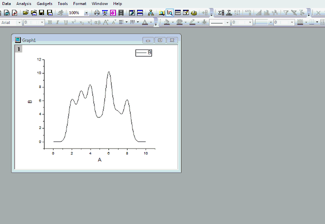

FAQ-624 Wie füge ich Füllfarbe in einen ausgewählten Bereich einer Kurve hinzu?
fill-color-under-range
Letztes Update: 07.01.2019
Minitool Integration verwenden
- Verwenden Sie das Minitool Integration und stellen Sie sicher, dass Schattierungsfarbe nach neuer Ausgabe beibehalten aktiviert ist. Hinweis: Dies ist erst an Origin 2018b verfügbar.
- Klicken Sie auf die Schaltfläche > und wählen Sie Neue Ausgabe.
- Es wird ein Schatten hinzugefügt.
- Sie können Schatten in mehreren Bereichen einfügen, indem Sie das ROI-Feld verschieben, und Neue Ausgabe wählen.
- Klicken Sie auf X, um das Minitool zu schließen.
- Wählen Sie eine Füllfläche und verwenden Sie die Symbolleiste Stil, um die Füllfarbe und das Füllmuster anzupassen.
- 
In Origin 2016 SR1 ist stattdessen dieses Kontrollkästchen Schattierungsfarbe nach Schließen des Minitools beibehalten zu finden, um die Schattierung beizubehalten, wenn das Minitool geschlossen wird. Es kann nur ein Bereich schattiert werden.
Zeichnung duplizieren und Unterbereich der duplizierten Zeichnung füllen
Ab Origin 2016 unterstützt Origin das Kopieren einer Zeichnung und ihr Einfügen als duplizierte Kopie. Also:
- Klicken Sie auf das Hilfsmittel Regionaler Daten-Selektor
 in der Symbolleiste Hilfsmittel und wählen Sie einen Bereich der Zeichnung. Drücken Sie die ESC-Taste, um den Auswahlmodus zu verlassen.
in der Symbolleiste Hilfsmittel und wählen Sie einen Bereich der Zeichnung. Drücken Sie die ESC-Taste, um den Auswahlmodus zu verlassen.
- Klicken Sie auf den Bereich, um ihn zu markieren, und kopieren Sie ihn durch Drücken von Strg+C.
- Drücken Sie Strg+V, um ihn zu zeichnen.
- Klicken Sie doppelt auf das Diagramm, um den Dialog Details Zeichnung zu öffnen. Wählen Sie die eingefügte Zeichnung im linken Bedienfeld aus, gehen Sie zur Registerkarte Linie und aktivieren Sie das Kontrollkästchen Fläche unter Kurve füllen, um die gewünschte Fläche zu füllen.
Hinweis: Die Füllfläche kann die untere X-Achse blockieren. Klicken Sie mit der rechten Maustaste auf die X-Achse und deaktivieren Sie Daten oberhalb von Achsen, um die Achsen oben anzuzeigen.

Gleiche Zeichnung erneut zum Diagramm hinzufügen
Alte Methode vor Origin 2016:
- Es gibt mehrere Möglichkeiten, um den Unterbereich einer Zeichnung zu einem Diagramm hinzuzufügen:
- Markieren Sie den Datenbereich im Arbeitsblatt und ziehen Sie ihn oer Drag&Drop in das Diagramm.
- Verschieben Sie zuerst die gesamte Spalte per Drag&Drop in das Diagramm und bearbeiten Sie dann den Bereich im Dialog Layerinhalt.
- Wählen Sie im Dialog Layerinhalt die Spalte aus und verschieben Sie sie in den Layer und bearbeiten Sie den Bereich.
- Fügen Sie im Dialog Diagrammeinstellungen die Spalte zum Diagramm hinzu und bearbeiten Sie den Bereich.
- Wenn die Zeichnung zum Diagramm hinzugefügt wurde, öffnen Sie den Dialog Details Zeichnung und wählen Sie den Unterbereich auf der linken Seite aus. Aktivieren Sie auf der Registerkarte Linie das Kontrollkästchen Fläche unter Kurve füllen.
- Wechseln Sie zur Registerkarte Muster, um die Füllfarbe und das Füllmuster benutzerdefiniert anzupassen.
Hinweis: Die Füllfläche kann die untere X-Achse blockieren. Gehen Sie im Dialog Details Zeichnung zur Ebene Layer. Deaktivieren Sie auf der Registerkarte Anzeige das Kontrollkästchen Daten über Achsen. Die X-Achse wird gezeigt.
Schlüsselwörter:Füllfläche, Analysemarkierungen, Analysemarker, Layermanagement, Layer-Verwaltung, Dialog Diagrammeinstellungen, Setup Diagramm